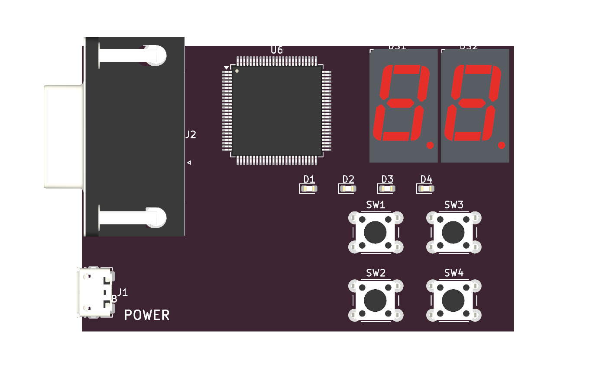

Examples:
1
Compiler output
Ready.
Board simulationTime: 0.000 ms Edges: 0

VGANO SIGNAL
640x480 @ 60Hz · FRAME 0000
Hold the four board buttons with the mouse.
Device: iCE40HX1K Package: VQ100 Clock: 25,000,000 Hz Client-side simulation · hardware fit not synthesized